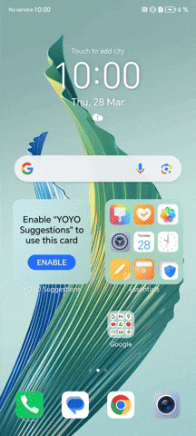
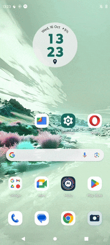
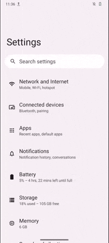

How to enable developer options on an Android device?

This resource falls under the how-to guides category and shows the steps to enable the Developer Options menu on different Android devices, as well as a brief explanation of what developer options are and why they are useful in digital forensics. This is introductory material, complementary to other resources such as the explainer on log-based forensics for Android devices, and is part of the steps to follow for an initial triage.
We appreciate the collaboration of RSF Security Lab, who provided us with a set of guides and screenshots that enabled the development of this resource.
What are developer options and why they are helpful?
Developer options refer to a hidden menu in the Android operating system that grants access to additional functions, primarily intended to support debugging during the development of new applications. Embeded in the developer options, there are also advanced settings such as preferences of graphics drivers, network configurations and even experimental features being tested or developed.
From a digital forensics perspective, particularly when conducting log-based investigations using tools such as MVT and AndroidQF, developer options allow us to enable key functions like USB debugging, the ADB console, or the generation of bug reports. For this reason, enabling the developer options menu is often the first step in the acquisition process.
Why are there different ways to enable them?
The Android operating system is based on the Android Open Source Project (AOSP). However, most manufacturers use a proprietary version from Google, on top of which they add additional, mostly proprietary, customization layers. There are also alternatives such as LineageOS, GrapheneOS, and CalyxOS, which are entirely based on open-source principles and aim to move away from proprietary ecosystems.
The result of these additional developments on the base project is a wide variety of graphical interfaces for the operating system. Some examples include:
- Pixel UI: User interface developed by Google for Pixel devices. Similar to the base Android version but includes additional proprietary customizations from Google.
- One UI: User interface developed by Samsung for smart devices, including Android mobile devices since 2017. Versions exist for phones, tablets, smartwatches, and computers.
- HyperOS: User interface developed by Xiaomi, launched in 2023, replacing the previous MIUI
- ColorOS: Mobile operating system and user interface created by Oppo Electronics
- Realme UI: User interface developed by Realme, a subsidiary of Oppo Electronics, which also owns the OnePlus brand.
- Oxygen OS: Operating system developed by OnePlus exclusively for its smartphones.
- Harmony OS: Operating system developed by Huawei. While sometimes presented as an entirely separate operating system, it is still based on Android and its prior customization layer, EMUI.
- Hello UI: Graphic interface developed by Motorola, part of Lenovo. This video shows relevant aspects of the graphic interface.
- Xperia UI: User interface developed by Sony.
- Magic OS: Operating system developed by Honor, previously a subsidiary of Huawei.
Step-by-step instructions
The following section shows the steps to enable the developer options menu on different devices, along with screenshots of the relevant menus for each interface.
Google (Pixel OS)
To enable the developer options in Pixel devices follow these steps, shown also on image 1.
- Open the device Settings ⚙️
- Navigate to the last option About phone üì±
- Navigate to the bottom and locate the Build Number üî¢
- Tap 7 times the build number, until you see a confirmation message üëÜ
Image 1. Steps to enable developer options on a Google Pixel running Android 13.
From now on, the developer options will appear as an additional menu under System, and will remain enabled until they are manually disabled from the developer options menu.
Honor (Magic OS)
To enable the developer options in Honor devices follow these steps, shown also on image 2.
- Open the device Settings ⚙️
- Navigate to the last option About phone üì±
- Locate the Build Number üî¢
- Tap 7 times the build number, until you see a confirmation message üëÜ
From now on, the developer options will appear as an additional menu under System & Updates, and will remain enabled until they are manually disabled from the developer options menu.

Image 2. Steps to enable developer options on a Honor Magic Lite running Magic OS 7.1 and Android 13.
Motorola (Hello UI)
To enable the developer options in Motorola devices follow these steps, shown also on image 3.
- Open the device Settings ⚙️
- Navigate to the last option About phone üì±
- Navigate to the bottom and locate the Build Number üî¢
- Tap 7 times the build number, until you see a confirmation message üëÜ
From now on, the developer options will appear as an additional menu under System, and will remain enabled until they are manually disabled from the developer options menu.

Image 3. Steps to enable developer options on a Motorola Edge Neo 40 running Hi OS and Android 13.
Nokia
To enable the developer options in Nokia devices follow these steps, shown also on image 4.
- Open the device Settings ⚙️
- Navigate to the last option About phone üì±
- Navigate to the bottom and locate the Build Number üî¢
- Tap 7 times the build number, until you see a confirmation message üëÜ
From now on, the developer options will appear as an additional menu under System, and will remain enabled until they are manually disabled from the developer options menu.

Image 4. Steps to enable developer options on a Nokia G42 5G running Android 13.
Oppo Reno 10 (Color OS)
To enable the developer options in OPPO devices follow these steps, shown also on image 5.
- Open the device Settings ⚙️
- Navigate to the last option About phone üì±
- Open the menu Version üìù
- Navigate to the bottom and locate the build number üî¢
- Tap 7 times the version number, until you see a confirmation message üëÜ
From now on, the developer options will appear as an additional menu under Additional Settings, and will remain enabled until they are manually disabled from the developer options menu.

Image 5. Steps to enable developer options on a Oppo device.
Realme (Realme UI)
To enable the developer options in Realme devices follow these steps, shown also on image 6.
- Open the device Settings ⚙️
- Navigate to the last option About phone üì±
- Open the menu Version üìù
- Navigate to the bottom and locate the build number üî¢
- Tap 7 times the version number, until you see a confirmation message üëÜ
From now on, the developer options will appear as an additional menu under Additional Settings, and will remain enabled until they are manually disabled from the developer options menu.
Image 6. Steps to enable developer options on a Realme GT2 Pro with RealMe UI 4.0 and Android 13
Samsung (One UI)
To enable the developer options in Samsung devices follow these steps, shown also on image 7.
- Open the device Settings ⚙️
- Navigate to the last option About phone üì±
- Open the menu Software Information üìù
- Locate the build number üî¢
- Tap 7 times the version number, until you see a confirmation message üëÜ

Image 7. Steps to enable developer options on a Samsung Galaxy A54 with One UI and Android 13
Sony (Xperia UI)
To enable the developer options in Sony devices follow these steps, shown also on image 8.
- Open the device Settings ⚙️
- Navigate to the last option About phone üì±
- Navigate to the bottom and locate the Build Number üî¢
- Tap 7 times the build number, until you see a confirmation message üëÜ
From now on, the developer options will appear as an additional menu under System, and will remain enabled until they are manually disabled from the developer options menu.
Image 8. Steps to enable developer options on a Sony Xperia 10V with Xperia UI 4.0 and Android 14.
Tecno (Hi OS)
To enable the developer options in Tecno Spark devices follow these steps, shown also on image 9.
- Open the device Settings ⚙️
- Navigate to the last option My phone üì±
- Locate the Build Number üî¢
- Tap 7 times the build number, until you see a confirmation message üëÜ
Image 9. Steps to enable developer options on a Tecno Spark Go with Hi OS and Android 13.
Xiaomi (Hyper OS)
To enable the developer options in Xiaomi devices follow these steps, shown also on image 10.
- Abre el menú de Ajustes ⚙️
- Ingresa a la opci√≥n de Acerca del tel√©fono üì±
- Ubica la informaci√≥n sobre el Versi√≥n de Sistema Operativo üî¢
- Presiona 7 veces sobre el número de compilaci√≥n, hasta que veas un mensaje de confirmaci√≥n. üëÜ
image 10. Steps to enable developer options on a Xiamoi device.
Las opciones de desarrollador aparecerán como un nuevo submenú dentro del apartado de Opciones avanzadas, y se mantendrán habilitadas hasta que se deshabiliten (desde el menú de opciones de desarrollador).
Conclusion
The graphical interface of Android devices varies between manufacturers that use the Android Open Source Project (AOSP) as a base. Each manufacturer develops its own customization layer, with different levels of modification, resulting in interfaces with different appearances, menus, and options.
The developer options menu is a hidden menu that can be enabled through a simple procedure in the graphical interface and is necessary to modify key settings required during a forensic extraction process, such as the ADB console or generating a bug report. This resource compiles screenshots from different manufacturers and interfaces to make it easier for civil society analysts to enable developer options.
If you have access to a graphical interface not shown in this list and would like to contribute a screenshot to this resource, you can contact us through an issue or, if you are comfortable with markdown, submit a pull request.
Comments
Do you have any comment or suggestion about this resource? You can use the comment function provided below to leave your ideas, corrections or thoughts. Please make sure to follow our code of conduct when leaving your comment. If you prefer, you can also participate in the discussion directly in the github repository.